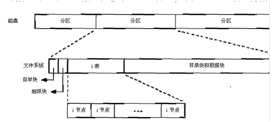
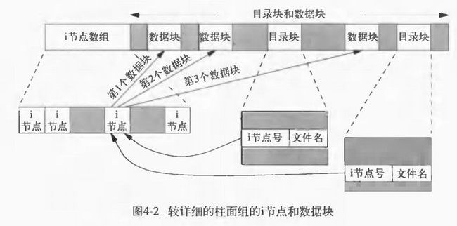
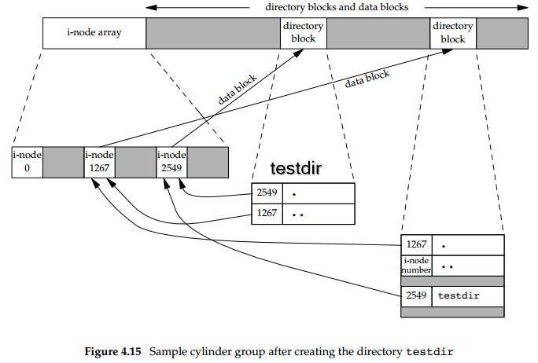

文件和目录
首先从stat函数开始逐个说明stat结构的每一个成员以了解文件的所有属性 然后将说明修改这些属性的各个函数(更改所有者,更改许可权等) 接着更详细地察看UNIX文件系统的结构以及符号连接 最后介绍对目录进行操作的各个函数并且开发了一个以降序遍历目录层次结构的函数
stat、fstat和lstat函数
获取一个文件的详细信息 可以使用 stat 函数组：
#include <sys/types.h> #include <sys/stat.h> /** * 根据文件路径名获取文件的详细信息 * * pathname: 文件路径名 * buf: 指向文件信息结构体stat变量的指针 * * 成功：返回 0，出错：返回 -1 * */ int stat(const char* pathname, struct stat* buf); /** * 根据文件描述符获取文件的详细信息 * * filedes: 文件描述符号 * buf: 指向文件信息结构体stat变量的指针 * * 成功：返回 0，出错：返回 -1 * */ int fstat(int filedes, struct stat* buf); /** * 返回链接文件的有关信息,而不是由该链接引用的文件的信息 * * pathname：文件路径名 * buf：指向文件信息结构体stat变量的指针 * * 成功：返回 0，出错：返回 -1 * */ int lstat(const char* pathname, struct stat* buf);
使用stat函数最多的可能是 ls -l 命令，用其可以获得有关一个文件的所有信息
stat结构
stat结构给出了Unix下 文件(目录)各种属性 的相关信息
struct stat { mode_t st_mode; //文件的类型和权限 ino_t st_ino; //inode的节点号 dev_t st_dev; //设备号 dev_t st_rdev; //特殊设备号 nlink_t st_nlink; //硬链接数 uid_t st_uid; //文件所有者 gid_t st_gid; //文件所属组 off_t st_st_size; //文件的字节数 time_t st_atime; //文件的最后存取时间 time_t mtime; //文件的最后修改时间 time_t ctime; //文件权限的最后修改时间 long st_blksize; //最佳的IO块长度 long st_blocks; //512字节的块数 };
文件类型
- 普通文件
- 目录
- 字符特殊设备：某些类型的设备，终端等
- 块特殊设备：磁盘设备
- FIFO管道：进程间的通信
- Socket套接字：主要是进程间的网络通信，也可以是同一台机器不同进程间通信
- 符号链接：文件指向另一个文件
文件类型测试宏
| 宏 | 文件类型 |
| S_ISREG() | 普通文件 |
| S_ISDIR() | 目录文件 |
| S_ISCHR() | 字符特殊文件 |
| S_ISBLK() | 块特殊文件 |
| S_ISFIFO() | 管道或FIFO |
| S_ISLNK() | 符号连接 |
| S_ISSOCK() | 套接字 |
文件类型信息包含在stat结构的 st_mode 成员内，以其为参数调用以下宏进行测试，如果返回为真则说明是此种文件类型
#include <sys/types.h> #include <sys/stat.h> #include "apue.h" int main(int argc, char *argv[]) { int i; struct stat buf; char *ptr; for(i = 1; i < argc; ++i) { printf("%s: ", argv[i]); if(lstat(argv[i], &buf) < 0) { err_ret("lstat error"); continue; } if(S_ISREG(buf.st_mode)) ptr = "regular"; else if(S_ISDIR(buf.st_mode)) ptr = "directory"; else if(S_ISCHR(buf.st_mode)) ptr = "character special"; else if(S_ISBLK(buf.st_mode)) ptr = "block special"; else if(S_ISFIFO(buf.st_mode)) ptr = "fifo"; #ifdef S_ISLNK else if(S_ISLNK(buf.st_mode)) ptr = "symbolic link"; #endif #ifdef S_ISSOCK else if(S_ISSOCK(buf.st_mode)) ptr = "socket"; #endif else ptr = "** unknown mode **"; printf("%s\n", ptr); } exit(0); }
测试文件类型
$ ./filetype ./filetype.c ./filetype.o ./ /dev/sda1 /dev/tty1 /dev/log /dev/fd/0 ./filetype.c: regular ./filetype.o: regular ./: directory /dev/sda1: block special /dev/tty1: character special /dev/log: socket /dev/fd/0: symbolic link
文件权限
进程相关的用户和组ID
| ID类型 | 含义 |
|---|---|
| 实际用户ID, 实际组ID | 我们实际上是谁 |
| 有效用户ID，有效组ID，添加组ID | 用于文件存取许可权检查 |
| 保存设置-用户-ID，保存-设置-组ID | 由exec函数保存 |
- 实际用户ID 和 实际组ID 这两个字段在 登录时取自口令文件中的登录项 。通常在一个登录会话期间这些值并不改变，但是 超级用户进程有方法改变它们
- 有效用户ID ， 有效组ID 以及 添加组ID 决定了 文件访问权
- 保存的 设置-用户-ID 和 设置-组-ID 在 执行一个程序 时包含了 有效用户ID和有效组ID的副本
通常有效用户ID等于实际用户ID，有效组ID等于实际组ID
设置-用户-ID和设置-组-ID
每个文件有一个所有者和组所有者。所有者由stat结构中的 st_uid 表示，组所有者则由 st_gid 成员表示。
当执行一个程序文件时，进程的 有效用户ID 通常就是 实际用户ID ， 有效组ID 通常是 实际组ID 。但是可以在 st_mode中设置一个特殊标志 ，其定义是 当执行此文件时，将 进程的有效用户ID 设置为 文件的所有者 (st_uid)
与此相类似，在文件方式字中可以设置另一位，它使得执行此文件的进程的有效组ID设置为文件的组所有者(st_gid)
这两位被称之为 设置-用户-ID (set-user-ID)位和 设置-组-ID (set-group-ID)位。这两位可用常数 S_ISUID 和 S_ISGID 测试
文件存取许可权
Unix对文件定义了三组用户权限，分别对应为 宿主用户 (user)、 组用户 (group)、 其它用户 (other)，每组用户各有自己对此文件的 读 、 写 、 执行 权限。权限值以 八进制 的形式表示,也记录在stat结构的 st_mode 字段中
| st_mode mask | 意义 |
|---|---|
| S_IRUSR | 用户读 |
| S_IWUSR | 用户写 |
| S_IXUSR | 用户执行 |
| S_IRGRP | 组读 |
| S_IWGRP | 组写 |
| S_IXGRP | 组执行 |
| S_IROTH | 其他用户读 |
| S_IWOTH | 其他用户写 |
| S_IXOTH | 其他用户执行 |
存取权限规则
- 用名字打开任一类型的文件时，对该名字中包含的 每一个目录 ，包括它可能 隐含的当前工作目录 都应具有 执行 许可权。
- 对于一个 文件的读许可权 决定了是否能够 打开该文件进行读操作 ：这对应于open函数的 O_RDONLY 和 O_RDWR 标志
- 对于一个 文件的写许可权 决定了是否能够 打开该文件进行写操作 ：这对应于open函数的 O_WRONLY 和 O_RDWR 标志
- 为在open函数中对一个文件指定 O_TRUNC 标志，必须对该文件具有 写 许可权
- 为了在一个 目录中创建一个新文件 ，必须对 该目录 具有 写 许可权 和 执行 许可权
- 为了 删除一个文件 ，必须对 包含该文件的目录 具有 写 许可权和 执行 许可权。 对该文件本身则不需要有读、写许可权
- 如果用6个exec函数中的任何一个 执行某个文件 ，都必须对 该文件 具有 执行 许可权
存取权限测试
适当的 存取许可权位 指的是：
- 若进程为 读而打开 该文件，则相应 读位应为1
- 若进程为 写而打开 该文件，则相应 写位应为1
- 若进程将 执行 该文件，则相应 执行位应为1
进程每次 打开 、 创建 或 删除 一个文件时，内核就进行 文件存取许可权测试 ，而这种测试可能涉及 文件的所有者 (st_uid和st_gid)， 进程的有效ID (有效用户ID和有效组ID)以及 进程的添加组ID (若支持的话)。两个所有者ID是文件的性质，而有效ID和添加组ID则是进程的性质。内核进行的测试是:
- 若 进程的有效用户ID是0 (超级用户)，则允许存取。这给予了超级用户对文件系统进行处理的最充分的自由
- 若 进程的有效用户ID等于文件的所有者ID (也就是该进程拥有此文件):
- 若 适当的所有者存取许可权位被设置 ，则允许存取
- 否则拒绝存取
- 若 进程的有效组ID或进程的添加组ID之一等于文件的组ID :
- 若 适当的组存取许可权位被设置 ，则允许存取
- 否则拒绝存取
- 若 适当的其他用户存取许可权位被设置 ，则允许存取，否则拒绝存取
新文件和目录的所有权
创建新文件和目录的用户ID被设置为 进程的有效用户ID
关于组ID，POSIX.1允许选择下列之一作为新文件和目录的组ID：
- 新文件的组ID可以是 进程的有效组ID
- 新文件的组ID可以是它 所在目录的组ID
access函数
access函数：按实际用户ID和实际组ID测试存取权限
#include <unistd.h> /** * 按实际用户ID和实际组ID进行存取许可权测试 * * pathname：文件名路径 * mode: 存取权限 * * 若拥有权限：返回0：无权限或出错：返回-1，根据errno进行判断 * */ int access(const char *pathname, int mode);
mode参数
| mode | 说明 |
|---|---|
| R_OK | 测试读许可权 |
| W_OK | 测试写许可权 |
| X_OK | 测试执行许可权 |
| F_OK | 测试文件是否存在 |
access函数实例
#include <sys/types.h> #include <fcntl.h> #include "apue.h" int main(int argc, char *argv[]) { if(argc != 2) err_quit("usage: a.out <pathname>"); if(access(argv[1], R_OK) < 0) err_ret("access error for %s", argv[1]); else printf("read access OK\n"); if(open(argv[1], O_RDONLY) < 0) err_ret("open error for %s", argv[1]); else printf("open for reading OK\n"); exit(0); }
umask函数
umask函数 为进程设置文件方式创建mask值
当该进程结束时，mask值仍保持原来系统中的值不变
#include <sys/stat.h> #include <sys/type.h> /** * 为进程设置文件方式创建屏蔽字,并返回以前的值 * * cmask：设置进程的mask值，由表4-4中的9个常数(S_IRUSR,S_IWUSR等)逐位“或”构成的 * * 成功：返回当前进程的mask值（无出错返回） * */ mode_t umask(mode_t cmask);
从 创建文件时指定的权限 中 减掉umask中指定的权限
比如进程创建文件时指定的用户权限是:777(rwxrwxrwx)，而指定的umask指定的值是022
则该进程创建的该文件的权限就是755(rwxr-xr-x)
umask实例
创建第一个时umask值为0，创建第二个时umask值禁止所有组和其他存取许可权。结果是第一个文件的权限是rw-rw-rw-，第二个权限是rw- — —
#include <sys/types.h> #include <sys/stat.h> #include <fcntl.h> #include "apue.h" int main(void) { umask(0); //foo的权限是666 if(creat("foo", S_IRUSR | S_IWUSR | S_IRGRP | S_IWGRP | S_IROTH | S_IWOTH) < 0) err_sys("creat error for foo"); umask(S_IRGRP | S_IWGRP | S_IROTH | S_IWOTH); //bar的权限是600 if(creat("bar", S_IRUSR | S_IWUSR | S_IRGRP | S_IWGRP | S_IROTH | S_IWOTH) < 0) err_sys("creat error for bar"); exit(0); }
chmod和fchmod函数
chmod/fchmod函数：改变文件访问权限
#include <sys/stat.h> #include <sys/types.h> /** * 根据文件路径名改变文件存取权限 * * filename: 文件路径名 * mode_t: 文件存取权限 * * 成功：返回 0，失败：返回 -1 * */ int chmod(const char *filename, mode_t mode); /** * 根据文件描述符改变文件存取权限 * * filedes: 文件描述符 * mode_t: 文件存取权限 * * return：若成功则为0，若出错则为-1 */ int fchmod(int filedes, mode_t mode);
mode参数
参数mode：根据表4-6中所示常数的位运算获得
| mode | 说明 |
|---|---|
| S_ISUID | 执行时设置-用户-ID |
| S_ISGID | 执行时设置-组-ID |
| S_ISVTX | 保存正文 |
| S_IRWXU | 用户(所有者)读、写和执行 |
| S_IRUSR | 用户(所有者)读 |
| S_IWUSR | 用户(所有者)写 |
| S_IXUSR | 用户(所有者)执行 |
| S_IRWXG | 组读、写和执行 |
| S_IRGRP | 组读 |
| S_IWGRP | 组写 |
| S_IXGRP | 组执行 |
| S_IRWXO | 其他读、写和执行 |
| S_IROTH | 其他读 |
| S_IWOTH | 其他写 |
| S_IXOTH | 其他执行 |
如果一个可执行程序文件的 S_ISVTX 这位被设置了，在该程序第一次执行并结束时，该程序正文的一个文本被保存在交换区
程序的正文部分是机器指令部分，这使得下次执行该程序时能较快地将其装入内存区
其原因是：在交换区，该文件是被连续存放的，而在一般的UNIX文件系统中，文件的各数据块很可能是随机存放的
现今较新的UNIX系统大多数都具有虚存系统以及快速文件系统，所以不再需要使用这种技术
chmod实例
根据foo的当前状态设置其许可权。为此先调用stat获得其当前许可权，然后修改它。显式地打开了 设置-组-ID位 、关闭了 组-执行位 。最后直接修改bar的权限
#include <sys/types.h> #include <sys/stat.h> #include "apue.h" int main(void) { struct stat statbuf; if(stat("foo", &statbuf) < 0) err_sys("stat error for foo"); /* turn on set-group-ID and turn off group-execute */ if(chmod("foo", (statbuf.st_mode & ~S_IXGRP) | S_ISGID) < 0) err_sys("chmod error for foo"); /*set absolute mode to "rw-r--r--"*/ if(chmod("bar", S_IRUSR | S_IWUSR | S_IRGRP | S_IROTH) < 0) err_sys("chmod error for bar"); exit(0); }
ls命令将 组-执行许可权 表示为 -l chmod函数更新的只是i节点最近一次被更改的时间 而 ls -l 列出的是最后修改文件内容的时间
自动忽略某些权限常数
- 如果试图设置 普通文件的S_ISVTX ，而且又 没有超级用户 优先权，那么mode中的 粘住位自动被关闭
只有超级用户才能设置普通文件的粘住位。这样做的理由是可以防止不怀好意的用户设置粘住位，并试图以此方式填满交换区
- 新创建文件的组ID可能不是调用进程所属的组。特别地如果 新文件的组ID 不等于 进程的有效组ID或者进程添加组ID中的一个 ，以及进程 没有超级用户 优先权，那么 设置-组-ID位自动被关闭
防止了用户创建一个设置-组-ID文件，而该文件是由并非该用户所属的组拥有的
chown, fchown和lchown函数
chown函数组：更改文件的用户ID和组ID
#include <sys/types.h> #include <unistd.h> /** * 根据文件路径名更改用户ID和组ID * * pathname: 文件路径名 * owner: 用户ID * group: 组ID * * return: 若成功则为 0，若出错则为 -1 */ int chown(const char* pathname, uid_t owner, gid_t group); /** * 根据打开的文件描述符更改用户ID和组ID * * filedes: 文件描述符 * owner: 用户ID * group: 组ID * * return: 若成功则为 0，若出错则为 -1 * */ int fchown(int filedes, uid_t owner, gid_t group); /** * 修改链接文件本身的更改用户ID和组ID，而不是所指向的文件 * * pathname: 文件路径名 * owner: 用户ID * group: 组ID * * return: 若成功则为 0，若出错则为 -1 * */ int lchown(const char* pathname, uid_t owner, gid_t group);
如果这些函数由非超级用户进程调用，则在成功返回时，该文件的 设置-用户-ID位 和 设置-组-ID位 都被 清除
chown限制
若 _POSIX_CHOWN_RESTRICTED 系统配置常量对指定的文件起作用，则
- 只有 超级用户 进程能 更改该文件的用户ID
- 若满足下列条件，一个 非超级用户进程 可以更改该文件的组ID:
- 进程拥有此文件 (其 有效用户ID 等于 该文件的用户ID )
- 参数owner 等于 文件的用户ID ， 参数group 等于 进程的有效组ID 或 进程的添加组ID 之一
当_POSIX_CHOWN_RESTRICTED有效时，不能更改其他用户的文件的用户ID
只可以更改你所拥有的文件的组ID，但只能改到你所属的组
文件长度
stat结构的成员 st_size 包含了以 字节 为单位的该 文件的长度 。此字段只对 普通 文件、 目录 文件和 符号链接 有意义
- 普通文件：其文件长度可以是0，在读这种文件时，将得到文件结束指示
- 目录：文件长度通常是 16 或 512 的整倍数
- 符号连接：文件长度是 被链接文件名的实际字节数
例如：ant -> apache-ant-1.9.7/
其文件长度17，这就是路径名apache-ant-1.9.7的长度
$ ls -l lrwxrwxrwx 1 klose klose 17 Nov 20 21:14 ant -> apache-ant-1.9.7/
注意：因为符号连接文件长度总是由st_size指示，所以符号连接并不包含通常C语言用作名字结尾的'\0'(null)字符
st_blksize和st_blocks
- st_blksize：对 文件I/O较好 的块长度
- st_blocks：所分配的 实际st_blksize大小的字节数
st_blksize表示读操作时读一个文件所需的最少时间量 为了效率的缘故，标准I/O库也试图一次读、写st_blksize个字节
文件空洞
空洞是所设置的 偏移量 超过 文件尾端 并写入数据后造成的
$ ls -l file.hole #ls显示实际文件长度是4000010字节 -rw-r--r-- 1 klose klose 4000010 Jan 30 20:41 file.hole $ du ./file.hole #du显示了实际上文件只占了12个1024字节块 12 ./file.hole
空洞并不会占用实际的磁盘空间
因此使用du则只会显示使用了多少字节块
但是使用ls查看文件大小时会计算空洞的大小
truncate和ftruncate函数
truncate函数组：以指定长度截短文件
len为0 等价于使用O_TRUNC标记调用open函数 在打开文件时将文件的内容清空
#include <sys/types.h> #include <unistd.h> /** * 以指定长度截短文件 * * pathname: 文件路径名 * len: 指定长度 * * return: 若成功则为 0，若出错则为 -1 * */ int truncate(const char* pathname, off_t len); /** * 以指定长度截短文件 * * filedes: 文件描述符 * len: 指定长度 * * return: 若成功则为 0，若出错则为 -1 * */ int ftruncate(int filedes, off_t len);
- 如果该文件以前的长度大于len，则超过len以外的数据就不再能存取
- 如果以前的长度短于length，则其后果与系统有关
- 比如某个实现的处理是扩展该文件，则在以前的文件尾端和新的文件尾端之间的数据将读作0(也就是在文件中创建了一个空洞)
文件系统
Unix/Linux系统下可以使用多种文件系统实现，如基于BSD的Unix文件系统(UFS)，EXT，传统的V文件系统等。这些文件系统都不影响下面的描述
一个磁盘分成一个或多个分区，见图4-1，每个分区可以包含一个文件系统

如果在忽略 自举块 和 超级块 情况下更仔细地观察文件系统，则可以得到图4-2中所示的情况

i节点
i节点：包含有关 文件的大部分元信息 ，比如
- 文件类型
- 文件访问权限位
- 文件长度
- 指向文件数据块的指针等
每个文件只有一个i节点 stat结构中的大多数信息都取自i节点
目录项
目录项：
- 文件名
- i节点号：数据类型是ino_t
因为目录项中的i节点编号数指向同一文件系统中的i节点，所以不能使一个目录项指向另一个文件系统的i节点
这就是为什么ln(1)命令不能跨越文件系统的原因
当在同一个分区内为一个文件更名时，该文件的实际内容并未移动
只需构造一个指向现存i节点的新目录项，并删除老的目录项
例如将文件/usr/lib/foo更名为/usr/foo
如果目录/usr/lib和/usr在同一文件系统上，则文件foo的内容无需移动，这就是mv(1)命令的通常操作方式
数据块
数据块：用来记录文件的实际内容，它在磁盘上的 位置由 i结点 来指示
它的大小可以为 1 ， 2 ， 4K 字节
链接
硬链接
在图4-2中有两个目录项指向同一i节点。每个i节点中都有一个 链接计数 ，其值是 指向该i节点的目录项数 。这种连接被称为 硬链接
只有当连接计数减少为0时，才可删除该文件(也就是可以释放该文件占用的数据块)
这就是为什么解除对一个文件的连接操作并不总是意味着释放该文件占用的磁盘块的原因。也就是为什么删除一个目录项的函数被称之为unlink而不是delete的原因。
这就是为什么解除对一个文件的连接操作并不总是意味着释放该文件占用的磁盘块的原因
也就是为什么删除一个目录项的函数被称之为 unlink 而不是 delete 的原因
在stat结构中，连接计数包含在 st_nlink 成员中，其基本系统数据类型是 nlink_t
符号链接
该文件的实际内容(在数据块) 包含了该符号连接所指向的文件的名字
比如lib->urs/lib：该目录项中的文件名是lib，而在该文件中包含了7个数据字节usr/lib
符号链接的文件类型是 S_IFLNK ，于是系统知道这是一个符号链接
目录链接
创建新的目录testdir
$ mkdir testdir
图4-3显示了其结果：

- 编号为 2549 的i节点，其类型字段表示它是一个目录
连接计数为2：任何一个叶子目录(不包含任何其他目录)其连接计数总是2
数值2来自于命名该目录 'testdir' 的目录项以及在该目录中的 '..' 项
- 编号为 1267 的i节点，其类型字段表示它是一个目录
连接计数则大于或等于3：
一个是命名它的目录项(在图4-3中没有表示出来)
第二个是在该目录中的 '.' 项
第三个是在其子目录testdir中的 '..' 项
注意： 在工作目录中的每个子目录都使该工作目录的连接计数增1
link函数
link函数： 创建一个向现存文件目录项
#include <unistd.h> /** * 创建一个指向现存文件的目录项 * * existingpath: 已经存在的文件路径名 * newpath: 连接后的文件路径名 * * return: 若成功则为 0，若出错则为 -1 * */ int link(const char* existingpath, const char* newpath);
创建一个新目录项newpath，它引用现存文件existingpath，如若newpath已经存在，则返回出错
创建新目录项以及增加连接计数应当是个原子操作！
unlink函数
unlink函数： 删除一个现存的目录项
#include <unistd.h> /** * 删除一个现存的目录项 * * pathname：文件或者目录路径名 * * return：若成功则为 0，若出错则为 -1 * */ int unlink(const char* pathname);
删除目录项，并将由pathname所引用的文件的硬链接计数减1，如果出错，则不对该文件作任何更改：
- 为了解除对文件的连接,必须对包含该目录项的目录具有写和执行许可权
- 如果pathname是符号连接，那么unlink涉及的是符号连接而不是由该连接所引用的文件
- 超级用户可以调用带参数pathname的unlink指定一个目录，但是通常不使用这种方式，而使用函数rmdir
如果文件还有其他连接，则仍可通过其他连接存取该文件的数据
只有当连接计数达到0时并且没有进程打开该文件，文件的内容才可被删除
关闭一个文件时内核首先检查使该文件打开的进程计数，如果该计数达到0，然后内核检查其连接计数，如果这也是0，那么就删除该文件的内容
unlink实例
打开一个文件，然后unlink它。执行该程序的进程然后睡眠15秒钟，接着就终止
#include <sys/types.h> #include <sys/stat.h> #include <fcntl.h> #include "apue.h" int main(void) { if(open("tempfile", O_RDWR) < 0) err_sys("open error"); if(unlink("tempfile") < 0) err_sys("unlink error"); printf("file unlinked\n"); sleep(15); printf("done\n"); exit(0); }
测试代码：
$ echo "hello world " > tempfile $ ls -l tempfile # 1表示有1个目录项目指向tempfile -rw-r--r-- 1 klose klose 13 Jan 30 22:53 tempfile $ ./unlinkExample file unlinked done $ ls -l tempfile ls: cannot access 'tempfile': No such file or directory
remove函数
remove函数：对于文件remove与unlink一样，对于目录remove与rmdir一样
#include <stdio.h> /** * 对于文件remove与unlink一样，对于目录remove与rmdir一样 * * pathname: 文件或目录路径名 * * return: 若成功则为 0，若出错则为 -1 * */ int remove(const char* pathname);
rename函数
rename函数：修改文件或者目录名字
#include <stdio.h> /** * 修改文件或者目录名字 * * oldname: 旧的文件或目录路径名 * newname: 新的恩见或目录路径名 * * return: 若成功则为 0，若出错则为 -1 * */ int rename(const char* oldname, const char* newname);
- 如果oldname是一个文件而不是目录，那么为该文件更名
- 如果newname已存在，则它不能引用一个目录
- 如果newname已存在而且不是一个目录
- 先将该目录项删除然后将oldname更名为newname
- 对包含oldname的目录以及包含newname的目录，调用进程必须具有写许可权，因为将更改这两个目录
- 如若oldname是一个目录，那么为该目录更名
- 如果newname已存在，则它必须引用一个目录，而且该目录应当是空目录(空目录指的是该目录中只有.和..项)
- 先将其删除，然后将oldname更名为newname
- 当为一个目录更名时，newname不能包含oldname作为其路径前缀
- 如果newname已存在，则它必须引用一个目录，而且该目录应当是空目录(空目录指的是该目录中只有.和..项)
例如，不能将/usr/foo更名为/usr/foo/testdir，因为老名字(/usr/foo)是新名字的路径前缀，因而不能将其删除
作为一个特例，如果oldname和newname引用同一文件，则函数不做任何更改而成功返回
- 若newname已经存在，则调用进程需要对其有写许可权。另外调用进程将删除oldname目录项，并可能要创建newname目录项，所以它需要对包含oldname及包含newname的目录具有写和执行许可权
符号连接
符号连接是对一个文件的间接指针，而硬连接直接指向文件的i节点
引进符号连接的原因是为了避免硬连接的一些限制：
- 硬连接通常要求连接和文件位于 同一文件系统 中
- 只有 超级用户 才能创建到目录的硬连接
对符号连接以及它指向什么没有文件系统限制，任何用户都可创建指向目录的符号连接。符号连接一般用于将一个文件或整个目录结构移到系统中其他某个位置
函数对符号连接的处理
- 跟随：该函数的路径名参数引用会跟随由符号连接指向的文件
- 不跟随：该符号连接路径名不跟随由符号连接引用的文件
| 函数 | 不跟随符号连接 | 跟随符号连接 |
| access | • | |
| chdir | • | |
| chmod | • | |
| chown | • | • |
| creat | • | |
| exec | • | |
| lchown | • | |
| link | • | |
| lstat | • | |
| mkdir | • | |
| mkfifo | • | |
| mknod | • | |
| open | • | |
| opendir | • | |
| pathconf | • | |
| readlink | • | |
| remove | • | |
| rename | • | |
| stat | • | |
| truncate | • | |
| unlink | • |
符号连接循环
使用符号连接可能在文件系统中引入循环 。大多数查找路径名的函数在这种情况发生时都返回值为 ELOOP 的errno
创建了一个目录foo，它包含了一个名为a的文件以及一个指向foo的符号连接
$mkdir foo #创建一个新目录 $touch foo/a #创建0长文件 $ln - s ../foo foo/testdir #创建一符号连接 $ls -1 foo total 1 -rw-rw-r-- 1 stevens 0 Dec6 06:06 a lrwxrwxrwx 1 stevens 6 Dec6 06:06 testdir -> ../foo
如果遍历目录不考虑这种情况，那么从foo到/foo/testdir则又会回到foo
symlink函数
symlink函数：创建一个符号连接
#include<unistd.h> /** * 创建一个符号连接 * * actualpath：被引用文件路径名 * sympath：符号连接文件路径名 * * return: 若成功则为 0，若出错则为 -1 * */ int symlink(const char* actualpath, const char* sympath);
创建了一个指向actualpath的新目录项sympath，在创建此符号连接时，并不要求actualpath已经存在，并且actualpath和sympath并不需要位于同一文件系统中
readlink函数
readlink函数：因为open函数跟随符号连接，所以需要有一种方法 打开该连接本身文件 ，而readlink函数就提供了这个功能
#include <unistd.h> /** * 读取一个符号链接，它不会跟随符号链接指向的文件，返回的是符号链接本身的信息，即指向的文件的名字 * * pathname: 符号链接文件路径名 * buf: 保存指向文件名字的缓存区 * bufsize: 缓存区大小 * * return: 若成功则为读的字节数，若出错则为 -1 * */ int readlink(const char* pathname, char* buf, int bufsize);
此函数组合了open，read和close的所有操作
注意：在buf中返回的符号连接的内容不以null字符终止！
文件的时间
对每个文件保持有三个时间字段，它们的意义示于表4-7中
| 字段 | 说明 | 例子 | ls(1)选择项 |
| st_atime | 文件数据的最后读取时间 | read | -u |
| st_mtime | 文件数据的最后修改时间 | write | 缺省 |
| st_ctime | i节点状态的最后更改时间 | chmod,chown | -c |
- 修改 时间： 文件内容 最后一次被 修改 的时间
- 更改状态 时间：该文件的 i节点 最后一次被 修改 的时间。比如文件的 存取许可权 、 用户ID 、 链接数 等操作，这些只会影响到i节点，而不影响实际内容
- 系统并不保存对一个i节点的最后一次读取时间 ，所以 access 和 stat 函数并不会影响这三个时间中的任何一个
ls命令会按这三个时间值中的一个排序进行显示：
- -l 按文件的 修改 时间的先后排序显示（系统默认）
- -u 选择项使其用 读取 时间排序
- -c 选择项则使其用 更改状态 时间排序
三个时间的作用
使用 读取 时间来 删除 在一定的时间范围内没有读取过的文件
典型的例子是使用find(1)命令删除在过去一周内没有读取过的名为a.out或core的文件
修改 时间和 更改状态 时间可被用来 归档 其 内容已经被修改 或其 i节点已经被更改 的那些文件
各个函数的影响
已说明过的各种函数对这三个时间的作用
|
function |
referenced file(or directory) | parent directory |
comment |
||||
| a | m | c | a | m | c | ||
| f/chmod | • | ||||||
| f/chown | • | ||||||
| create | • | • | • | • | • | O_CREATE | |
| create | • | • | O_TRUNCATE | ||||
| exec | • | ||||||
| lchown | • | ||||||
| link | • | • | • | ||||
| mkdir | • | • | • | • | • | ||
| mkfifo | • | • | • | • | • | ||
| open | • | • | • | • | • | O_CREATE | |
| open | • | • | O_TRUNCATE | ||||
| pipe | • | • | • | ||||
| read | • | ||||||
| remove | • | • | • | = unlink | |||
| remove | • | • | = rmdir | ||||
| rename | • | • | • | ||||
| rmdir | • | • | |||||
| f/truncate | • | • | |||||
| unlink | • | • | • | ||||
| utime | • | • | • | ||||
| write | • | ||||||
utime函数
atime 和 mtime 可由 utime 函数更改，同时 ctime 将 自动更新为执行时的时间
#include <sys/types.h> #include <utime.h> /** * 更改一个文件的存取和修改时间 * * pathname: 文件路径名 * times: 文件时间结构 * * return: 若成功则为 0，若出错则为 -1 * */ int utime(const char *pathname, const struct utimbuf *times);
utimebuf 结构：两个时间值是Unix日历时间（自1970年1月1日00:00:00以来国际标准时间所经过的秒数）
struct utimbuf { time_t actime; /*accesstime*/ time_t modtime; /*modificationtime*/ }
- 如果 times 是一个 空指针 ，则 存取 时间和 修改 时间两者都设置为 当前时间 。为了执行此操作必须满足下列两条件之一：
- 进程的有效用户ID 必须等于该 文件的所有者ID
- 进程对该文件必须具有 写许可权
2.如果 times 是 非空 指针，则 存取 时间和 修改 时间被设置为 times所指向的结构中的值 。为了执行此操作只具有写权限是不够的，必须满足下列两个条件之一：
- 进程的有效用户ID 必须等于 该文件的所有者ID
- 进程必须是一个 超级用户进程
utime函数实例
使用带O_TRUNC选择项的open函数将文件长度截短为0，但并不更改其存取时间及修改时间
首先用stat函数得到这些时间，然后截短文件，最后再用utime函数重置这两个时间
#include <sys/types.h> #include <sys/stat.h> #include <fcntl.h> #include <utime.h> #include "apue.h" int main(int argc, char *argv[]) { int i; struct stat statbuf; struct utimbuf timebuf; for(i = 1; i < argc ; ++i) { if(stat(argv[i], &statbuf) < 0) { err_ret("%s: stat error", argv[i]); continue; } if(open(argv[i], O_RDWR | O_TRUNC) < 0) { err_ret("%s: open error", argv[i]); continue; } timebuf.actime = statbuf.st_atime; timebuf.modtime = statbuf.st_mtime; if(utime(argv[i], &timebuf)< 0) { err_ret("%s: utime error", argv[i]); continue; } } exit(0); }
测试代码：
$ls -l helloworld -rw-r--r-- 1 klose klose 12 Jan 31 22:42 helloworld $ls -lu helloworld -rw-r--r-- 1 klose klose 12 Jan 31 22:42 helloworld $./utimeExample helloworld $ls -l helloworld -rw-r--r-- 1 klose klose 0 Jan 31 22:42 helloworld $ls -lu helloworld -rw-r--r-- 1 klose klose 0 Jan 31 22:42 helloworld
目录操作
mkdir函数
mkdir函数：创建目录
#include <sys/types.h> #include <sys/stat.h> /** * 创建目录 * * pathname: 目录路径名 * mode: 目录权限 * * return: 若成功则为 0，若出错则为 -1 * */ int mkdir(const char *pathname, mode_t mode);
此函数创建一个新的空目录。 '.' 和 '..' 目录项是 自动创建 的。所指定的 文件存取许可权mode由进程的umask修改
常见的错误是指定与文件相同的mode(只指定读、写许可权)
但是对于目录通常至少要设置1个“执行“许可权位，以允许存取该目录中的文件名
rmdir函数
rmdir函数：删除目录
#include <unistd.h> /** * 删除目录 * * pathname: 目录路径名 * * return: 若成功则为 0，若出错则为 -1 * */ int rmdir(const char *pathname);
- 如果此调用使目录的 连接计数成为0 ，并且也 没有其他进程打开此目录 ，则 释放由此目录占用的空间
- 如果在 连接计数达到0 时，有 一个或几个进程打开了此目录 ，则在此函数返回前 删除最后一个连接及 '.' 和 '..' 项
- 在此目录中 不能再创建新文件
- 但是在 最后一个进程关闭 它之前 并不释放此目录
读取目录
- 目录的 读许可权位 ：用户是否能 读 该目录，但是 只有内核才能写目录 (防止文件系统发生混乱)
- 目录的 写许可权位 ：决定了在该目录中能否 创建 新文件（并不表示能否写目录本身）
- 目录的 执行许可权位 ：决定了在该目录中能否 删除 文件
目录的实现依赖于不同的实现，早期系统可能每个目录项的文件名是14个字节，i节点编号是2个字节
而现代的系统文件名可以更长。这就意味着读目录的程序与系统相关
为了简化这种情况，UNIX现在包含了一套与读目录有关的例程，它们是POSIX.1的一部分
DIR和dirent结构
- 目录流DIR结构 是一个内部结构，其作用类似于FILE，由 标准I/O库 维护
目录项结构dirent 与实现有关，必须包含2个字段： i结点号 和 文件/目录名
struct __dirstream { int fd; /* File descriptor. */ size_t allocation; /* Space allocated for the block. */ size_t size; /* Total valid data in the block. */ size_t offset; /* Current offset into the block. */ off_t filepos; /* Position of next entry to read. */ char data[0]; /* Directory block. */ }; typedef struct __dirstream DIR; struct dirent { ino_t d_ino; /*i-node number*/ char d_nam[NAME_MAX + 1]; /* null-teminated file/directory name */ }
目录流操作函数
- opendir：把目录内容放到目录流 ，使第一个readdir读目录中的第一个目录项
- readdir：读取一个目录项，目录流指针指向下一个目录项
- rewinddir：重置目录流指针到第一个目录项目
closedir：关闭目录流指针
#include <sys/types.h> #include <dirent.h> /** * 把子目录和文件等放到目录流中，使第一个readdir读目录中的第一个目录 * * pathname: 目录路径名 * * return: 若成功则为指向目录流的指针，若出错则为 NULL * */ DIR *opendir(const char *pathname); /** * 读取一个目录项，目录流指针指向下一个目录项 * * dp: 指向目录流的指针 * * return: 若成功则为指向目录项的指针，若在目录尾或出错则为 NULL * */ struct dirent *readdir(DIR *dp); /** * 重置目录流指针到DIR*流的起点 * * dp: 指向目录流的指针 * * return: 若成功为 0，若失败为 -1 * */ void rewinddir(DIR *dp); /** * 关闭目录流 * * dp: 指向目录流的指针 * * return: 若成功为 0，若失败为 -1 * */ int closedir(DIR *dp);
遍历文件层次结构
根据起点目录路径名开始递归降序遍历文件层次结构
MyFunc：函数指针类型，接受3个参数，返回int
#include "apue.h" #include <dirent.h> #include <limits.h> /* function type that is called for each filename */ typedef int Myfunc(const char *, const struct stat *, int); static Myfunc myfunc; static int myftw(char *, Myfunc *); static int dopath(Myfunc *); static long nreg, ndir, nblk, nchr, nfifo, nslink, nsock, ntot; /* * Descend through the hierarchy, starting at "pathname". * The caller's func() is called for every file. */ #define FTW_F 1 /* file other than directory */ #define FTW_D 2 /* directory */ #define FTW_DNR 3 /* directory that can't be read */ #define FTW_NS 4 /* file that we can't stat */ static char *fullpath; /* contains full pathname for every file */
dopath函数：遍历某个目录，把目录流中各个目录项相关数据传递给func函数指针进行处理
/* * Descend through the hierarchy, starting at "fullpath". * If "fullpath" is anything other than a directory, we lstat() it, * call func(), and return. For a directory, we call ourself * recursively for each name in the directory. */ static int dopath(Myfunc* func) /* we return whatever func() returns */ { struct stat statbuf; struct dirent *dirp; DIR *dp; int ret; char *ptr; if (lstat(fullpath, &statbuf) < 0) /* stat error */ return(func(fullpath, &statbuf, FTW_NS)); if (S_ISDIR(statbuf.st_mode) == 0) /* not a directory */ return(func(fullpath, &statbuf, FTW_F)); /* * It's a directory. First call func() for the directory, * then process each filename in the directory. */ if ((ret = func(fullpath, &statbuf, FTW_D)) != 0) return(ret); ptr = fullpath + strlen(fullpath); /* point to end of fullpath */ *ptr++ = '/'; *ptr = 0; if ((dp = opendir(fullpath)) == NULL) /* can't read directory */ return(func(fullpath, &statbuf, FTW_DNR)); while ((dirp = readdir(dp)) != NULL) { if (strcmp(dirp->d_name, ".") == 0 || strcmp(dirp->d_name, "..") == 0) continue; /* ignore dot and dot-dot */ strcpy(ptr, dirp->d_name); /* append name after slash */ if ((ret = dopath(func)) != 0) /* recursive */ break; /* time to leave */ } ptr[-1] = 0; /* erase everything from slash onwards */ if (closedir(dp) < 0) err_ret("can't close directory %s", fullpath); return(ret); }
myfunc函数：根据目录项类型，文件类型的不同，出错类型对目录项进行不同操作
- 文件：相应文件类型的数目增加1
- 目录：目录类型的数目增加1
- 无法读取目录项：相应错误类型数目增加1
- 无法读取文件stat：相应错误类型数目增加1
static int myfunc(const char *pathname, const struct stat *statptr, int type) { switch (type) { case FTW_F: switch (statptr->st_mode & S_IFMT) { case S_IFREG: nreg++; break; case S_IFBLK: nblk++; break; case S_IFCHR: nchr++; break; case S_IFIFO: nfifo++; break; case S_IFLNK: nslink++; break; case S_IFSOCK: nsock++; break; case S_IFDIR: err_dump("for S_IFDIR for %s", pathname); /* directories should have type = FTW_D */ } break; case FTW_D: ndir++; break; case FTW_DNR: err_ret("can't read directory %s", pathname); break; case FTW_NS: err_ret("stat error for %s", pathname); break; default: err_dump("unknown type %d for pathname %s", type, pathname); } return(0); }
myftw函数：保护性拷贝输入的目录路径名，开始遍历
/* we return whatever func() returns */ static int myftw(char *pathname, Myfunc *func) { int len; fullpath = path_alloc(&len); /* malloc's for PATH_MAX+1 bytes */ strncpy(fullpath, pathname, len); /* protect against */ fullpath[len-1] = 0; /* buffer overrun */ return(dopath(func)); }
main函数：输入作为要遍历的目录路径名，遍历完毕后输出对应统计结果
int main(int argc, char *argv[]) { int ret; if (argc != 2) err_quit("usage: ftw <starting-pathname>"); ret = myftw(argv[1], myfunc); /* does it all */ ntot = nreg + ndir + nblk + nchr + nfifo + nslink + nsock; if (ntot == 0) ntot = 1; /* avoid divide by 0; print 0 for all counts */ printf("regular files = %7ld, %5.2f %%\n", nreg, nreg*100.0/ntot); printf("directories = %7ld, %5.2f %%\n", ndir, ndir*100.0/ntot); printf("block special = %7ld, %5.2f %%\n", nblk, nblk*100.0/ntot); printf("char special = %7ld, %5.2f %%\n", nchr, nchr*100.0/ntot); printf("FIFOs = %7ld, %5.2f %%\n", nfifo, nfifo*100.0/ntot); printf("symbolic links = %7ld, %5.2f %%\n", nslink, nslink*100.0/ntot); printf("sockets = %7ld, %5.2f %%\n", nsock, nsock*100.0/ntot); exit(ret); }
chdir，fchdir函数
- 当前工作目录：每个进程都有一个目录， 搜索所有相对路径名的起点 ，这是 进程 的一个属性
起始目录：当用户登录到UNIX系统时，其 当前工作目录 通常是口令文件 (/etc/passwd)中该 用户登录项 的 第6个字段 这，是 登录名 的一个属性
chdir函数组：更改当前进程的工作目录
#include <unistd.h> /** * 根据目录路径名更改当前工作目录 * * pathname: 更改后的当前工作目录路径名 * * return: 若成功返回 0，若出错返回 -1 * */ int chdir(const char *pathname); /** * 根据文件描述符更改当前工作目录 * * pathname: 新的当前工作目录的文件描述符 * * return: 若成功返回 0，若出错返回 -1 * */ int fchdir(int filedes);
chdir实例
#include "apue.h" int main(void) { if (chdir("/tmp") < 0) err_sys("chdir failed"); printf("chdir to /tmp succeeded\n"); exit(0); }
测试代码：
$ pwd /home/klose/Documents/programming/c/apue $ ./src/file_directory/chdirExample chdir to /tmp succeeded $ pwd /home/klose/Documents/programming/c/apue
执行chdirExample程序的shell的当前工作目录并没有改变
这是因为当前工作目录是一个进程的属性，所以它只影响调用chdirExample进程本身，而不影响其他进程
因此cd命令的执行程序必须直接包含在shell程序中！
getpwd函数
内核保持有当前工作目录的信息，所以可以取其当前值
不幸的是，内核为每个进程只保存其当前工作目录的i节点编号以及设备标识，但并不保存该目录的完整路径名
getpwd函数：获取当前工作目录的绝对路径名
#include <unistd.h> /** * 把当前工作目录绝对路径名+null字符放置到buf中 * * buf: 放置当前工作目录绝对路径名的缓存 * size: buf缓存大小 * * return: 若成功为buf，若出错为 NULL * */ char *getcwd(char *buf, size_t size);
getpwd从当前工作目录开始，找到其上一级的目录，然后读其目录项，直到该目录项中的i节点编号数与工作目录i节点编号数相同，这样地就找到了其对应的文件。按照这种方法，逐层上移，直到遇到根，由此获得当前工作目录的绝对路径名
getpwd实例
#include "apue.h" int main(void) { char *ptr; int size; if (chdir("/home/klose/Applications/maven/") < 0) err_sys("chdir failed"); ptr = path_alloc(&size); /* our own function */ if (getcwd(ptr, size) == NULL) err_sys("getcwd failed"); printf("cwd = %s\n", ptr); exit(0); }
测试代码：更改当前工作目录为某个连接目录，然后使用getpwd打印当前工作目录
$ pwd /home/klose/Documents/programming/c/apue $ ./src/file_directory/getpwdExample cwd = /home/klose/Applications/apache-maven-3.3.9
注意：chdir会跟随符号连接，而getpwd函数并不支持符号连接！
设备文件
stat结构中的 st_dev 和 st_rdev 这两个字段用来表示设备，规则如下:
- 每个文件系统都由其 主 、 次 设备号，设备号所用的数据类型是 dev_t
- 使用两个宏 major 和 minor 来存取主、次设备号。这意味着无需关心这两个数是如何存放在dev_t对象中
- 系统中每个文件名的 st_dev 值是 文件系统的设备号
- 只有 字符设备 文件和 块设备 文件才有 st_rdev值 是该 实际硬件设备的设备号
打印设备号
打印普通文件的st_dev，硬盘设备和终端设备的st_rdev
#include <sys/types.h> #include <sys/stat.h> #include "apue.h" int main(int argc, char *argv[]) { int i; struct stat buf; for (i = 1; i < argc; i++) { printf("%s: ", argv[i]); if (stat(argv[i], &buf) < 0) { err_ret("stat error"); continue; } printf("dev = %d/%d", major(buf.st_dev), minor(buf.st_dev)); if (S_ISCHR(buf.st_mode) || S_ISBLK(buf.st_mode)) { printf(" (%s) rdev = %d/%d", (S_ISCHR(buf.st_mode)) ? "character" : "block", major(buf.st_rdev), minor(buf.st_rdev)); } printf("\n"); } exit(0); }
测试代码
$ ./src/file_directory/printDev /home/klose/ /home/klose/: dev = 8/6 $ ./src/file_directory/printDev /dev/sda /dev/sda: dev = 0/6 (block) rdev = 8/0 $ ./src/file_directory/printDev /dev/sda2 /dev/sda2: dev = 0/6 (block) rdev = 8/2 $ ./src/file_directory/printDev /dev/tty /dev/tty: dev = 0/6 (character) rdev = 5/0 $ ./src/file_directory/printDev /dev/tty2 /dev/tty2: dev = 0/6 (character) rdev = 4/2 ./src/file_directory/printDev /dev/pts/2 /dev/pts/2: dev = 0/12 (character) rdev = 136/2
由此可见 st_dev对与任何文件而言都是文件系统的设备主次号
对于磁盘和终端等设备文件而言st_rdev包含真正设备主次号
sync，fsync函数
延迟写 ：UNIX实现在内核中设有 高速缓冲区 ，大多数磁盘I/O都通过缓存进行。当将数据写到文件上时，通常该数据先由 内核 复制到 高速缓存 中，如果该 高速缓存尚未写满 则并 不将其排入输出队列 ，而是 等待其写满 或者 当内核需要重用该缓存 以便存放其他磁盘块数据时，再将该缓存排入输出队列，然后 待其到达队首 时才进行 实际的I/O操作
延迟写减少了磁盘读写次数，但是却降低了文件内容的更新速度，使得欲写到文件中的数据在一段时间内并没有写到磁盘上
当系统发生故障时，这种延迟可能造成文件更新内容的丢失
为了保证 磁盘上实际文件系统 与 缓存中内容 的 一致性 ，UNIX系统提供了sync和fsync两个系统调用函数
#include <unistd.h> /** * 更新内核缓冲区内容到磁盘上 * * return: 若成功则为 0，若出错则为 -1 * */ void sync(void); /** * 直接更新特定文件描述符指向的文件的磁盘上的内容 * * filedes: 文件描述符 * * return: 若成功则为 0，若出错则为 -1 * */ int fsync(int filedes);
fsync是执行完毕后确保文件在磁盘上的内容是最新的(比较适合实现数据库commit操作) 而如果使用O_SYNC选项打开文件，那每次write操作都会直接更新文件磁盘上的内容